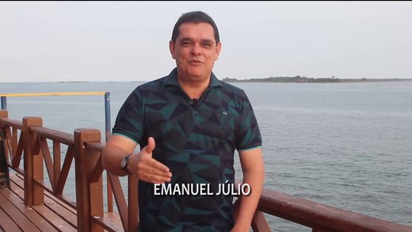

00:00:02.302
Emanuel Júlio abre a chamada diante de um guarda-corpo de madeira na orla, com o rio ao fundo e seu nome na tela.
Orla de Santarém, Santarém (PA) · confirmado
O apresentador situa a gravação em Santarém e introduz a cidade como passagem para quem visita Alter do Chão.
Transcrição · 00:00:00 | 00:00:08
Turismo Aqui — quadro de vídeo publicado no YouTube